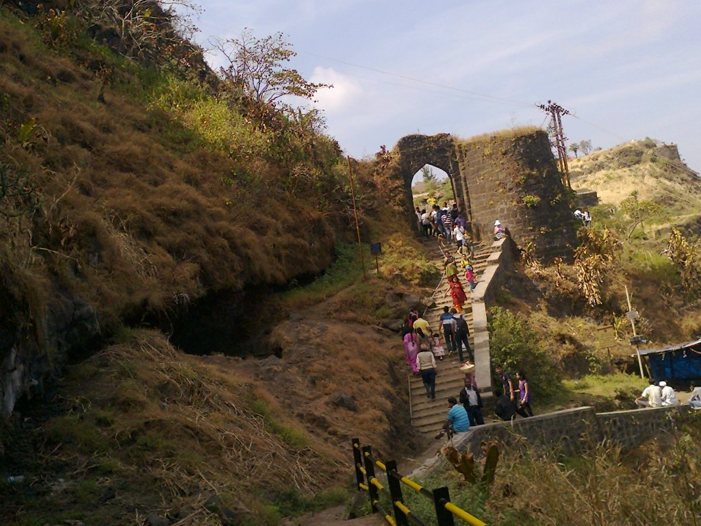
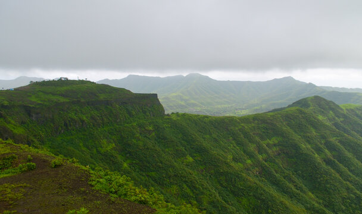
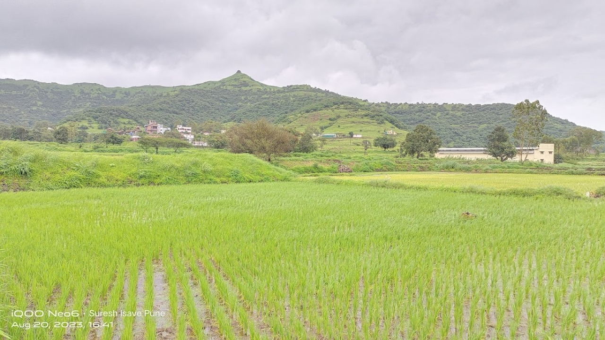
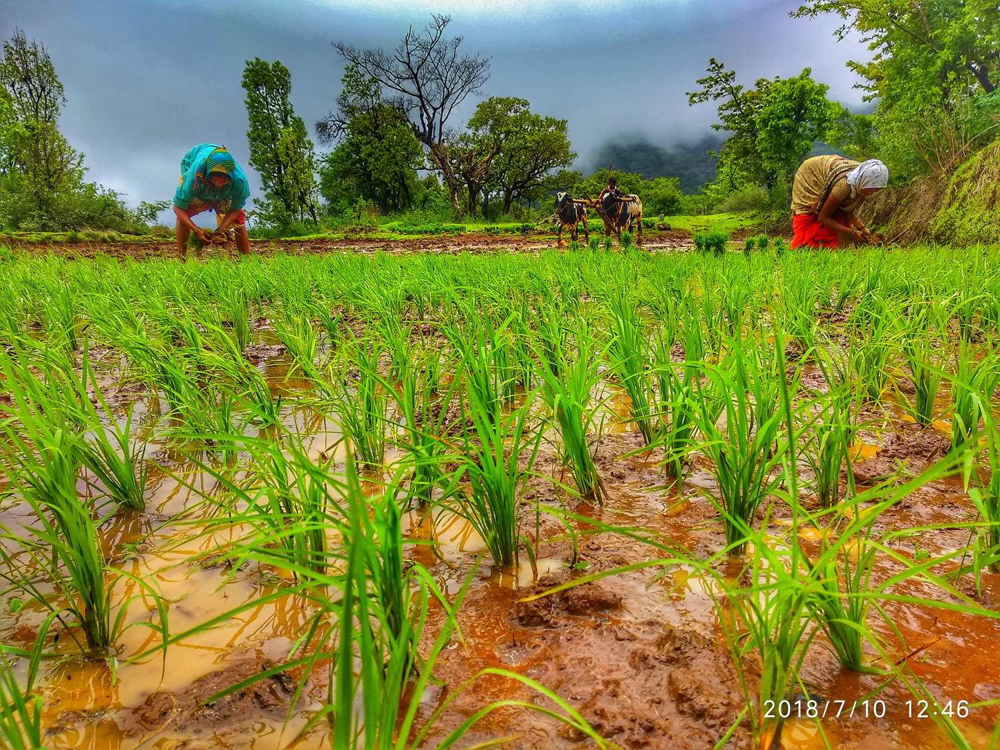

History
Sinhagad Fort, located approximately 30 kilometers southwest of Pune, is a historic hill fortress renowned for its rich history and scenic beauty. The fort features two main entrances: the Pune Darwaza to the northeast and the Kalyan Darwaza to the southeast. The Kalyan Darwaza faces the Kalyan village, which holds historical significance due to its association with the legendary Maratha warrior, Tanaji Malusare.
Tanaji Malusare, a trusted general of Chhatrapati Shivaji Maharaj, is celebrated for his pivotal role in the Battle of Sinhagad in 1670. To capture the fort from Mughal forces, Tanaji and his troops scaled the steep cliffs near Kalyan village using trained monitor lizards, a daring tactic that led to their successful but hard-fought victory. In honor of his bravery, the fort was renamed Sinhagad, meaning "Lion's Fort."
Today, visitors to Sinhagad Fort can explore various historical sites, including:
- Tanaji Malusare's Tomb: A memorial dedicated to the valiant warrior.
- Kalyan Darwaza: The southeastern entrance of the fort, historically significant as the route taken by Tanaji during the assault.
- Dev Take: A natural reservoir that once served as a vital water source for the fort's inhabitants.
- Hawa Point (Wind Point): A spot known for its strong winds and panoramic views of the surrounding landscape.
The fort is also popular among trekkers, with routes accessible from both the Pune Darwaza and Kalyan Darwaza sides. The trek from Kalyan village is considered relatively easier and offers scenic views of the Sahyadri mountain range.
For those interested in local cuisine, small eateries within the fort serve authentic Marathi dishes such as Pithla Bhakri, Kanda Bhaji, and curd served in clay pots, providing a delightful culinary experience amidst the historical ambiance.
Visiting Sinhagad Fort not only offers a journey into the past but also provides breathtaking natural vistas, making it a must-visit destination for history enthusiasts and nature lovers alike.


Our Speciality
The village is famous for its rice, which grows well because of the good soil and weather. The people here have been growing rice for many years, making it taste special. This rice is a big part of the village's food and culture.

